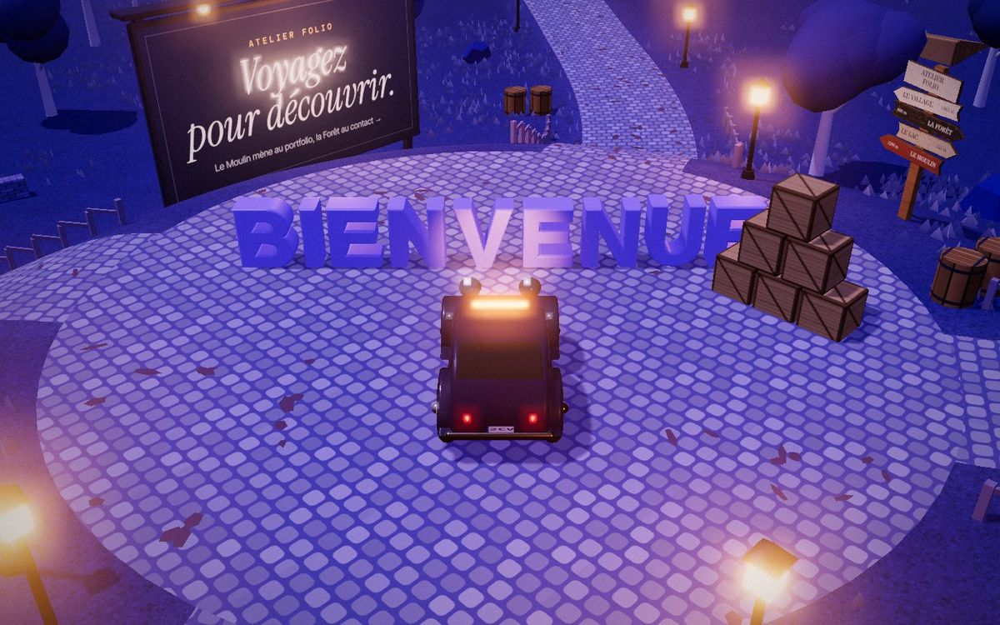

01 — Projet
La ville en 2CV
Un petit monde en 3D, de nuit, que l'on parcourt au volant d'une 2CV. Chaque quartier mène à une page : le village, le moulin, le lac.
- Année
- 2026
- Type
- Site interactif en 3D
- Outils
- Three.js, WebGL
